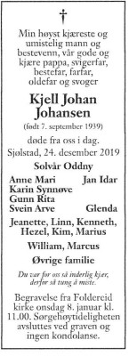

Johan Martinsen
M, #15476, f. 15 januar 1880, d. 3 november 1964
Foreldre
Biografi
Johan Martinsen ble født den 15 januar 1880 på/i Sør-Odal, Hedmark. Han giftet seg med
Jevarda Katty Johansdatter. Han døde den 3 november 1964 på/i Nærøy, Nord-Trøndelag. Han ble gravlagt den 10 november 1964 på/i Salsbruket kirkegård, Nærøy, Nord-Trøndelag.
| Sist redigert |
11 juli 2012 00:00:00 |
Solveig Martinsen
K, #15477, f. 22 januar 1915, d. 26 desember 1996
Foreldre
Biografi
Solveig Martinsen ble født den 22 januar 1915 på/i Trondheim, Sør-Trøndelag. Hun giftet seg med
Sverre Finnanger den 13 januar 1942. Hun døde den 26 desember 1996 på/i Nærøy, Nord-Trøndelag. Hun ble gravlagt den 5 januar 1997 på/i Salsbruket kirkegård, Nærøy, Nord-Trøndelag.
Solveig Martinsen was also known as Solveig Finnanger.
| Sist redigert |
11 juli 2012 00:00:00 |
| Slektskap | 5-menning 1 gang forskjøvet til Håkon Wahl |
Sverre Finnanger
M, #15478, f. 5 januar 1916, d. 4 oktober 1990
Foreldre
Biografi
Sverre Finnanger ble født den 5 januar 1916. Han giftet seg med
Solveig Martinsen den 13 januar 1942. Han døde den 4 oktober 1990 på/i Nærøy, Nord-Trøndelag. Han ble gravlagt den 11 oktober 1990 på/i Salsbruket kirkegård, Nærøy, Nord-Trøndelag.
| Sist redigert |
11 juli 2012 00:00:00 |
Svenn Johannes Finnanger
M, #15480, f. 22 februar 1945, d. 3 mars 2022
Foreldre
Biografi
Svenn Johannes Finnanger ble født den 22 februar 1945 på/i Kolvereid, Nærøy, Nord-Trøndelag. Han giftet seg med Wenche. Han døde den 3 mars 2022 på/i Sykehuset Levanger, Levanger, Trøndelag.
| Sist redigert |
7 mars 2022 00:00:00 |
| Slektskap | 6-menning til Håkon Wahl |
Jon Erik Finnanger
M, #15481, f. 14 februar 1948, d. 18 april 2026
Foreldre
Familie: Sissel Skjærvik (f. 20 oktober 1950, d. 1 oktober 2018)
| Datter | Kate Finnanger |
| Datter | Vanja Finnanger+ |
Biografi
Jon Erik Finnanger ble født den 14 februar 1948 på/i Kolvereid, Nærøy, Nord-Trøndelag. Han giftet seg med
Sissel Skjærvik den 26 juli 1969. Han døde den 18 april 2026 på/i St. Olavs hospital, Trondheim, Trøndelag. Han ble gravlagt den 28 april 2026 på/i Salsbruket kirkegård, Nærøysund, Trøndelag.
| Sist redigert |
25 april 2026 07:45:14 |
| Slektskap | 6-menning til Håkon Wahl |
Bergitte Westgaard
K, #15484, f. 30 oktober 1883, d. 21 januar 1983
Foreldre
Biografi
Bergitte Westgaard ble født den 30 oktober 1883 på/i Kolvereid, Nærøy, Nord-Trøndelag. Hun giftet seg med
Lorents Odin Antonsen Finnanger. Hun døde den 21 januar 1983. Hun ble gravlagt den 28 januar 1983 på/i Salsbruket kirkegård, Nærøy, Nord-Trøndelag.
Bergitte Westgaard was also known as Bergitte Finnanger.
| Sist redigert |
11 juli 2012 00:00:00 |
Lorents Odin Antonsen Finnanger
M, #15485, f. 27 september 1877, d. 28 november 1950
Foreldre
Biografi
Lorents Odin Antonsen Finnanger ble født den 27 september 1877 på/i Fosnes, Nord-Trøndelag. Han giftet seg med
Bergitte Westgaard. Han døde den 28 november 1950. Han ble gravlagt den 5 desember 1950 på/i Salsbruket kirkegård, Nærøy, Nord-Trøndelag.
Lorents Odin Antonsen Finnanger ble døpt den 18 november 1877 på/i Fosnes, Nord-Trøndelag.
| Sist redigert |
10 november 2013 00:00:00 |
Johannes Martinsen
M, #15486, f. 23 april 1916, d. 10 september 1943
Foreldre
Biografi
Johannes Martinsen ble født den 23 april 1916 på/i Nærøy, Nord-Trøndelag. Han døde den 10 september 1943. Han ble gravlagt den 18 september 1943 på/i Kolvereid kirkegård, Nærøy, Nord-Trøndelag.
| Sist redigert |
11 juli 2012 00:00:00 |
| Slektskap | 5-menning 1 gang forskjøvet til Håkon Wahl |
Anders Johansen
M, #15487, f. 17 juli 1895, d. 2 mai 1969
Foreldre
Biografi
Anders Johansen ble født den 17 juli 1895 på/i Aunevik; Foldereid, Nærøy, Nord-Trøndelag. Han giftet seg med
Gudrun Andersen den 2 april 1939. Han døde den 2 mai 1969 på/i Nærøy, Nord-Trøndelag. Han ble gravlagt den 8 mai 1969 på/i Foldereid kirkegård, Nærøy, Nord-Trøndelag.
Anders Johansen kjøpte den 23 februar 1935 Sjølstad 7/4, Sjølstad; Foldereid, Nærøy, Nord-Trøndelag.
| Sist redigert |
11 juli 2012 00:00:00 |
| Slektskap | 4-menning 2 ganger forskjøvet til Håkon Wahl |
Gudrun Andersen
K, #15488, f. 2 januar 1911, d. 7 mars 1982
Foreldre
Biografi
Gudrun Andersen ble født den 2 januar 1911. Hun giftet seg med
Anders Johansen den 2 april 1939. Hun døde den 7 mars 1982 på/i Nærøy, Nord-Trøndelag. Hun ble gravlagt den 17 mars 1982 på/i Foldereid kirkegård, Nærøy, Nord-Trøndelag.
Gudrun Andersen was also known as Gudrun Johansen.
| Sist redigert |
11 juli 2012 00:00:00 |
| Slektskap | 5-menning 1 gang forskjøvet til Håkon Wahl |
Kjell Johan Johansen
M, #15489, f. 7 september 1939, d. 24 desember 2019
Foreldre

Kjell Johan Johansen
Biografi
Kjell Johan Johansen ble født den 7 september 1939 på/i Sjølstad; Foldereid, Nærøy, Nord-Trøndelag. Han giftet seg med Solvår Oddny. Han døde den 24 desember 2019.

Han ble gravlagt den 8 januar 2020 på/i Foldereid kirkegård, Nærøysund, Trøndelag.
Kjell Johan Johansen bodde i 2009 på/i Foldereid, Nærøy, Nord-Trøndelag.
| Sist redigert |
19 august 2024 21:14:07 |
| Slektskap | 5-menning 1 gang forskjøvet til Håkon Wahl |
Ivar Johansen
M, #15491, f. 10 august 1897, d. 2 november 1971
Foreldre
Biografi
Ivar Johansen ble født den 10 august 1897 på/i Aunevik; Foldereid, Nærøy, Nord-Trøndelag. Han giftet seg med
Solveig Alida Saltkjeløy den 29 oktober 1931. Han døde den 2 november 1971 på/i Nærøy, Nord-Trøndelag. Han ble gravlagt den 9 november 1971 på/i Kolvereid kirkegård, Nærøy, Nord-Trøndelag.
Ivar Johansen ble døpt den 5 september 1897 på/i Foldereid, Nærøy, Nord-Trøndelag. Han bygslet den 21 oktober 1961 Borkmoen 10/1, Oplø; Kolvereid, Nærøy, Nord-Trøndelag.
| Sist redigert |
11 juli 2012 00:00:00 |
| Slektskap | 4-menning 2 ganger forskjøvet til Håkon Wahl |
Solveig Alida Saltkjeløy
K, #15492, f. 11 mai 1909, d. 20 september 1997
Foreldre
Biografi
Solveig Alida Saltkjeløy ble født den 11 mai 1909 på/i Kolvereid, Nærøy, Nord-Trøndelag. Hun giftet seg med
Ivar Johansen den 29 oktober 1931. Hun døde den 20 september 1997. Hun ble gravlagt den 26 september 1997 på/i Kolvereid kirkegård, Nærøy, Nord-Trøndelag.
Solveig Alida Saltkjeløy was also known as Solveig Alida Alida. Hun was also known as Solveig Alida Johansen.
| Sist redigert |
11 juli 2012 00:00:00 |
| Slektskap | 6-menning 2 ganger forskjøvet til Håkon Wahl |
Hermod Kristiansen Stadsøy
M, #15494, f. 7 februar 1921, d. 18 oktober 1992
Foreldre
Familie: Olga Marie Ivarsdatter Johansen
| Sønn | Jan Kristian Stadsøy |
| Datter | Helga Marie Stadsøy |
| Datter | Inger Annie Stadsøy+ |
| Sønn | Trond Steinar Stadsøy |
Biografi
Hermod Kristiansen Stadsøy ble født u.e. den 7 februar 1921 på/i Stadsøya, Buøya; Kolvereid, Nærøy, Nord-Trøndelag. Han giftet seg med Olga Marie Ivarsdatter Johansen. Han døde den 18 oktober 1992. Han ble gravlagt den 23 oktober 1992 på/i Kolvereid kirkegård, Nærøy, Nord-Trøndelag.
Hermod Kristiansen Stadsøy ble døpt den 5 juni 1921 på/i Kolvereid kirke, Nærøy, Nord-Trøndelag.
| Sist redigert |
17 desember 2025 21:30:41 |
| Slektskap | 4-menning 2 ganger forskjøvet til Håkon Wahl |
Kristian Larsen
M, #15499, f. 24 august 1893, d. 10 september 1968
Foreldre
Biografi
Kristian Larsen ble født den 24 august 1893 på/i Hofles; Kolvereid, Nærøy, Nord-Trøndelag. Han døde den 10 september 1968 på/i USA.
Kristian Larsen innvandret til USA den 22 mai 1922.
| Sist redigert |
20 august 2022 20:28:43 |
| Slektskap | 3-menning 3 ganger forskjøvet til Håkon Wahl |
Marie Kristiansdatter Stadsøy
K, #15500, f. 25 juli 1902, d. 3 mars 1985
Foreldre
Biografi
Marie Kristiansdatter Stadsøy ble født den 25 juli 1902 på/i Geisnes; Kolvereid, Nærøy, Nord-Trøndelag. Hun giftet seg med
Haakon Edmund Borkmo den 20 oktober 1928 på/i Nidarosdomen, Trondheim. Hun døde den 3 mars 1985 på/i Namsos, Nord-Trøndelag. Hun ble gravlagt den 8 mars 1985 på/i Namsos kirkegård, Namsos, Nord-Trøndelag.
Marie Kristiansdatter Stadsøy was also known as Marie Borkmo.
| Sist redigert |
1 februar 2023 18:50:08 |
| Slektskap | 7-menning 1 gang forskjøvet til Håkon Wahl |
{kind=link}